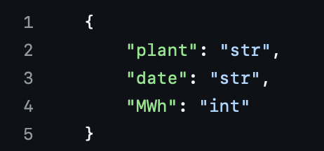
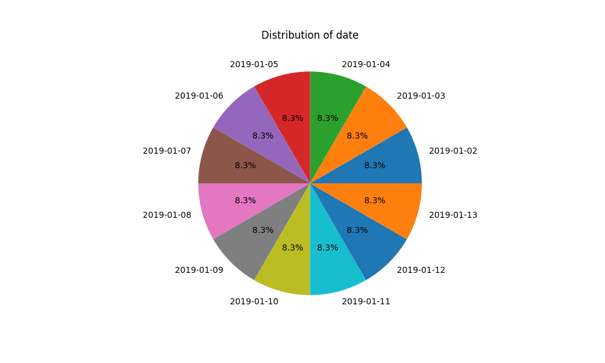
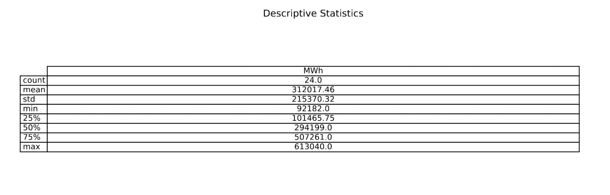

GenAI Agents for Data Engineering: Automating Schema Inference and Format Conversion
Abstract
As data continues to grow in volume and complexity, it is becoming an increasingly challenging task to understand, clean, and organize it for analysis. Before any meaningful analysis or modeling can take place, it's essential to first detect the format, infer the schema, clean the data, and standardize it into a usable form. Traditionally, this has required manual intervention and custom pipelines for each data source which takes time and can be inconsistent. To address this challenge, we propose an automated multi-agent system designed to intelligently handle every stage of the data intake process.
Our approach is to leverage the use of Generative AI to automate schema inference, serialization, and data transformation. Some of the key techniques include AI Agents/Multi-agent systems, Prompt Engineering, data pipelines, Pydantic, and much more. More specifically, the project uses an LLM within a multi-agent system agent to extract schemas from JSON, CSV, XML, duplicates, nested structures, and missing values, as well as standardize data. Pydantic is used for serialization and data validation to ensure data consistency prior to transformation. Our goal is to go beyond what can be done with normal data engineering by leveraging the abilities of generative AI both in terms of speed and complexity with a simple agent.
Introduction
One of the longest tasks when it comes to being a data scientist is data engineering. Whether you’re doing machine learning, deep learning, data visualization, or even building applied generative AI models, data engineering is a crucial and time-consuming step in this process. This project involves designing a fully automated multi-agent system capable of detecting data formats, inferring schemas, generating code, validating and transforming data, and storing results. With the rapid advances in Generative AI, large language models (LLMs) have shown strong potential for automating complex tasks. This project explores how Generative AI can be applied not just to generate text, but to reason about data formats, write functional code, validate outputs, and automate a full data processing pipeline. This approach could significantly reduce the manual work required in traditional data engineering jobs, offering an adaptive system for handling different types of complex datasets. By using LLMs in a structured multi-agent framework, we demonstrate how generative models can move beyond traditional use cases to build entire systems capable of real impact. Some of our research questions include:
- How accurately can a multi-agent system detect file types and infer schemas compared to traditional methods?
- Can LLM-generated code successfully read, validate, and standardize diverse real-world and synthetic datasets?
- How does the system's performance vary across different dataset sizes and file formats?
To begin addressing these questions, we have created an agent pipeline where each agent is initialized by wrapping specific tools and prompts. The architecture follows a ReAct agent pattern: the agent reasons about the task and selectively invokes tools.
At a broad level, the agent needs to detect the types of data formats (JSON, CSV, XML, etc.). This is initially done by identifying the filename extension. We created tools and an agent (Schema Detection Agent - detect_file_format) for this purpose. To improve the accuracy of file type detection, at a more granular level, the agent needs to detect the format by inspecting the file content. This involves identifying features such as column names and datatypes in CSVs or the structural aspects of a JSON file. We created tools and an agent for this as well (Schema Detection Agent - detect_schema).
Now that our agent from the previous step has identified the type and structure of the data, another agent is used to generate code to read the files, transform and clean the data, and turn the data into a standardized format (Pydantic/Parquet Agent). This agent first uses the file type found from the previous step to write code to read in the dataset. The next step for our agent is to validate our data. The agent uses Pydantic to make sure that only valid data makes it through our system. (serialization/deserialization). Once our agent has only valid data, it turns the data into a Parquet file to ensure a consistent data format. Now that the data is in a standardized format an agent needs to transform and clean the data (Code Generation Agent). It does this by generating code depending on the type of data found in previous steps. An agent then saves the transformed and cleaned data, either locally or to AWS S3 depending on the file size (S3 Agent). Additionally, we use an organization system for saving files based on their original file type.
Now that we have code to complete our task we will need an agent to run this code in order for our system to be a fully automated multi-agent system as intended. We will guide our multi-agent system to correctly run all code at the right steps. The agents in our system are as follows:
- Data generation agent
- Format detection and schema inference agent
- Pydantic/Parquet agent
- S3 file storage agent
- Code generation agent
- Code execution agent
Now that we have finished the main tasks of our system, we wanted a good way to test the agents. Since real-world datasets can be sensitive or proprietary, our project partially uses artificially generated data to test the system. For this, we use LLMs to create data with formats such as CSV, JSON, XML, and Parquet. We also used some non-synthetic data to test our system on real-world examples, testing different formats of the same dataset to see if we achieve consistent results. To show effectiveness we also monitored time and token usage as well.
To evaluate the system, we will check how well the agent identifies the file type compared to the actual file type, if generated data is valid, how well the system performs on different datasets, and whether the system produces consistent results when given different versions of the same dataset. A lot of the evaluation was done by manually parsing generated files and data to check for quality, and unit tests to check validity of saved files and structures.
Data Source and Preparation
An agent will use LLMs (e.g., Claude, Amazon Nova) to generate data sources and structure them in various formats, including CSV, JSON, XML, Parquet, and YAML.These data sources will be stored in AWS S3. Since synthetic data offers controlled variability, we will design prompts that introduce inconsistencies such as missing fields, inconsistent column names, schema variations, and data type mismatches. This will simulate real world datasets. Another agent will perform data preprocessing, which will include handling missing values and standardizing column names (cleaning), generating contextually accurate samples to fill gaps (augmentation), and converting data into proper formats for consistency (transformation). This agent will ensure that the previously generated synthetic datasets reflect real world data sets. Using synthetic data can achieve controlled and reproducible results. We can customize schemas and formats, making them ideal for testing our system. Additionally we wanted to have some real world datasets in order to test if our system would work in a real world environment.
The first dataset we chose has JSON, CSV, XML so we can test the consistency of our model with different types of data: Electric Vehicle Population Data - Catalog
Here are some datasets we used:
- Parquet data: datasets/2015_flights.parquet at main · gu-dsan5200/datasets
- JSON data: datasets/nfl-2018-week1.json at main · gu-dsan5200/datasets
- CSV data: datasets/powerplants.csv at main · gu-dsan5200/datasets
- XML Data: Stack Exchange Data Dump : Stack Exchange, Inc. : Free Download, Borrow, and Streaming : Internet Archive
We believe that these datasets along with the synthetic data we generated will be enough to test our system.
Agents
Overview
The GenAI Data Engineered Agent system was built primarily around a modular, multi-agent architecture, where each agent is responsible for a specific step of the data engineering workflow. Each agent follows the ReAct pattern — a framework where the agent can reason through complex multi-step tasks and decide when and how to call specialized tools to perform subtasks. All agents were implemented using LangChain on AWS Bedrock, leveraging foundation models for their reasoning and generation capabilities. Below, we describe each agent’s role, inner workings, architectural choices, and evaluation of effectiveness in detail.
Agent 1: Data generation agent
The Data Generation Agent is responsible for creating synthetic datasets in multiple formats (JSON, CSV, XML) based on user prompts. It is built as a ReAct agent using the create_react_agent function from the LangGraph module. The agent interacts with four tools: generate_JSON, generate_CSV, generate_XML, and save_to_file. Each tool is registered using the @tool decorator from LangChain, which enables the agent to invoke the appropriate function based on the prompt.
The architecture allows the agent to dynamically reason about the type of dataset the user requests and then select the correct data generation tool accordingly. For example, if a user prompts the system to "generate a medical dataset in JSON format," the agent will automatically call generate_JSON, passing the appropriate instructions to the underlying LLM to create realistic-looking data.
After generating the content, the agent uses the save_to_file tool to write the data to disk, assigning the correct file extension based on the format. This workflow ensures that data generation and storage are tightly coupled, reducing the likelihood of file format mismatches or errors.
The reason for building this agent was to support automated, on-demand data generation for testing and validation purposes, without requiring manual script creation. In the broader system, having access to realistic synthetic data is crucial for evaluating schema inference, validation, and file handling capabilities without relying solely on real-world datasets. Effectiveness was evaluated through manual inspection. After each file was generated, it was opened to verify schema integrity, realistic values, and correct formatting. Latency metrics were logged using Bedrock's response times to ensure the agent responded promptly and did not suffer from unreasonable delays.
Agent 2: Format Detection and Scheme Inference Agent
This agent’s core responsibility is to determine the file format of a given data file and infer its schema. Like Agent 1, it was built as a ReAct agent that can sequentially reason and act by invoking two custom tools: detect_file_format and detect_schema.
Upon receiving a file path, the agent first calls detect_file_format, which inspects the file extension or contents to determine whether it is JSON, CSV, XML, etc. Once the format is identified, the agent proceeds to call detect_schema, which analyzes the file's structure and content to infer field names, types, and nested relationships.
We chose a two-step design (first detect, then infer) rather than combining both into a single monolithic tool to allow finer-grained control and improve the explainability of each step. In production systems, decoupling detection from inference is important because format recognition failures can require different recovery paths compared to schema extraction errors.
Effectiveness was evaluated by running a large sample of synthetic and real-world files through the agent. Correct file format detection and reasonable schema extraction were manually verified by comparing agent-inferred schemas against known ground truth schemas where available.
Agent 3: Pydantic/parquet agent
The Pydantic/Parquet agent bridges the inferred schema to a standardized, storage-efficient output format — Apache Parquet. This agent reads JSON, CSV, or XML files, validates their structure using Pydantic models (auto-generated based on inferred schemas), and serializes the validated data into Parquet files.
Architecturally, it follows the ReAct pattern again, with three tool endpoints registered: json_to_parquet_with_pydantic, csv_to_parquet_with_pydantic, and xml_to_parquet_with_pydantic. Depending on the file format, the agent chooses the appropriate tool, constructs a Pydantic model from the detected schema, validates the file content, and then writes it as a Parquet file.
This design was motivated by two needs: (1) ensuring that the data conforms to a strict schema before storage, and (2) optimizing storage for scalability. Pydantic enforces type constraints and structure during validation, minimizing the risk of corrupted or semi-structured data entering the Parquet layer.
Effectiveness was evaluated through manual inspection of the generated Parquet files using Parquet viewers and schema browsers. The structure and field types matched expectations across most test cases. Minor issues were observed when the incoming data had subtle inconsistencies not caught during schema inference, suggesting opportunities for future stricter validation rules.
Agent 4: S3 file storage agent
After generation, processing, and conversion, storing the final datasets securely is critical. The S3 File Storage Agent is tasked with uploading files to a configured AWS S3 bucket.
It is built as a ReAct agent that calls a single tool: upload_to_s3. Upon receiving a file path, it securely uploads the file, handling retries and basic error checking.
This agent was kept minimalistic to reduce complexity in storage. Storage is a relatively atomic operation, and error handling mainly concerns authentication errors, connection timeouts, or incorrect bucket policies.
Effectiveness was evaluated by manually inspecting the S3 buckets to confirm that all uploaded files arrived intact, were named correctly, and were accessible with the appropriate permissions.
Agent 5: Code generation agent
This agent is responsible for generating Python code based on prompts related to data processing or schema handling tasks. For example, if a user prompts the system to "generate a Python class to validate user records," the agent generates appropriate file I/O and validation code.
The agent is created via the ReAct pattern, using the save_generated_code tool to write generated code to a Python file.
We chose to separate code generation from code execution to improve system maintainability. Code generation and execution involve different risks: generation might produce syntactically incorrect or malicious code if unchecked, so manual inspection between these steps provides an important safety net.
Effectiveness was evaluated manually by reviewing generated Python scripts for quality, correctness, and adherence to basic software engineering principles (e.g., modularity, comments, appropriate error handling).
Agent 6: Code execution agent
Finally, the Code Execution Agent executes the Python scripts generated by the previous agent. It uses a tool called executed_generated_code which internally runs the code through Python’s exec() function.
We designed this agent separately to provide a checkpoint between code generation and execution. By isolating the execution phase, we could build additional validation layers or sandboxing in the future to improve security.
Execution success or failure was monitored during tests, and error messages were logged when execution failed (e.g., due to missing imports, syntax errors, or file access issues).
This architecture offered flexibility in validating whether generated data transformation scripts could work in practice.
Summary
Each agent plays a specific role in a pipeline that moves from synthetic data generation all the way to secure storage and operational code. Collectively, the agents demonstrate how multi-agent, tool-using architectures, driven by LLMs, can automate large portions of the data engineering lifecycle. The primary reasons behind using multiple specialized agents were:
- Modularity: Each agent could be developed, tested, and improved independently.
- Explainability: Each agent’s actions and reasoning could be traced separately.
- Scalability: New formats, validation rules, or storage mechanisms can be added by simply creating new tools and agents.
Models and Technologies Used
For our project, we used two models via the AWS Bedrock Converse API: Anthropic’s Claude 3.5 Haiku(us.anthropic.claude-3-5-haiku-20241022-v1:0) and Amazon’s Nova Micro (us.amazon.nova-micro-v1:0). These models were integrated into our system using LangChain's Bedrock connectors, which allowed us to easily manage LLM calls within our multi-agent architecture. We noticed that it takes 70-110 seconds and 10,000-40,000 tokens depending on the data source.
Claude 3.5 Haiku was used for the majority of tasks, including schema inference, file format detection, code generation, and reasoning steps. We selected Claude 3.5 Haiku because of its strong performance on structured reasoning, code generation, and multi-step tool use, which were essential for the more complex stages of our pipeline.
Amazon’s Nova Micro model was used specifically for generating synthetic datasets. Nova Micro was a better fit for this task because of its faster generation times and lower cost, which made it more efficient for creating large volumes of synthetic CSV, JSON, and XML files.
We did not perform any fine-tuning of the models. Instead, we just used the pre-trained versions of Claude 3.5 Haiku for most LLM calls and Nova Micro for synthetic data generation. Fine-tuning was not necessary because the models performed well out-of-the-box for our tasks, including schema inference, code generation, and synthetic data creation. Given the project scope and timeline, fine-tuning would have introduced overhead in terms of dataset preparation, training time, evaluation, and cost. We focused on prompt engineering and system design to adapt model behavior where needed. If future work requires more customization, fine-tuning could be explored.
Tools and Frameworks
We primarily used Python for development, along with libraries and frameworks including LangChain and LangGraph for orchestration and Pydantic for data validation and schema generation. For synthetic data generation and LLM-based schema inference, we accessed models through Amazon Bedrock, using Anthropic Claude 3.5 Haiku and Amazon Nova Micro models. Our application relied on cloud infrastructure provided by Amazon Bedrock for model access. We also integrated Amazon S3 for storing synthetic datasets and intermediate results. Version control was handled through Git and GitHub, with pull requests and code reviews integrated into our workflow. We maintained good project organization, although full CI/CD pipelines and production deployment were outside the scope of this prototype.
Evaluation of Effectiveness
To evaluate the effectiveness of our system, we used both manual and automated methods. We manually reviewed the outputs generated by the models to ensure the quality and completeness of the data. This review process focused on verifying the presence of all required fields, the reasonableness of the generated values, and the correct storage of files in the expected formats (e.g., JSON, CSV). In addition to manual inspection, we implemented pytest-based test cases for each tool to automatically validate the structure and integrity of the generated and stored data. These tests checked for the file format/extension, presence of required fields, and verified data validity based on predefined criteria.
Although we did not perform formal benchmarking against baseline models or use automatic metrics such as BLEU, ROUGE, or MRR, our qualitative evaluation process provided strong assurance regarding the system’s reliability and correctness.
Responsible AI Considerations
Throughout the project, we actively incorporated responsible AI practices. To mitigate the risk of hallucinations and improve factual consistency, we refined our prompts iteratively using prompt engineering techniques. By crafting clear, specific prompts and constraining model outputs, we significantly reduced hallucinated or incomplete data generation.
Ethical implications and model safety were also key considerations in tool development. We ensured that the outputs were complete and aligned with intended use cases. Our testing process was designed to identify errors or inconsistencies that could lead to invalid outputs.
Findings and Insights
Through the implementation of the GenAI Data Engineered Agent system, several key findings emerged that highlight both the potential and current limitations of applying LLM-based multi-agent frameworks to complex data engineering workflows. Overall, the project successfully demonstrated that file-type detection, schema inference, and data validation could be largely automated across a variety of formats, both synthetic and real-world.
However, several unexpected challenges surfaced. While attempting to include functionalities for Avro files, handling this data proved particularly difficult. Unlike formats like CSV or JSON, Avro is a binary format requiring schema information to interpret correctly. Schema inference for Avro files could not rely on inspecting the raw file contents directly; specialized decoding steps were necessary before LLMs could reason about structure. Even with adjustments, occasional decoding errors or ambiguities in Avro schemas continued to pose challenges. This would be a good addition to explore in the future.
Evaluation presented another notable difficulty. Although many unit tests and validation rules were built to check for schema and data consistency, evaluating the quality of agent outputs was not always straightforward. We had to manually look through the generated and stored data for quality assessments.
Scalability challenges also emerged when applying the system to larger, real-world datasets. Processing large often strained LLM limits, resulting in errors, truncated analyses, or incomplete schema extractions. To manage these issues, data could be processed in smaller chunks, and prompt engineering could be used for compressing relevant schema information before sending it to the models. Overall, these findings validate the promise of LLM-driven multi-agent systems for automating large portions of the data engineering lifecycle but also reveal to us areas where further sophistication is necessary for full production-grade deployment.
Demo and Visuals
Examples of Generated Data
schema.json

date_pie_chart.png

descriptive_stats.pdf

Conclusion and Future Work
This project demonstrated the value of leveraging LLM-based multi-agent systems to automate key stages of the data engineering workflow, including file-type detection, schema inference, and data validation across a variety of structured and semi-structured formats. By carefully designing specialized agents and layering traditional programming with LLM reasoning, the system successfully processed both synthetic and real-world datasets with a high degree of autonomy on diverse formats such as CSV, JSON, XML, and YAML.
The impact of this system is significant: it shows that complex, labor-intensive data wrangling tasks can be automated at scale with minimal human intervention. Moreover, the modular agent-based design proved flexible, allowing the system to adapt to new file types and validation rules without major re-engineering.
However, several limitations remain in the current implementation. Challenges with binary formats such as Avro, difficulties in evaluating the quality of schema inferences, and scalability constraints when handling very large, deeply nested datasets highlighted important areas for further enhancement. While processing small to moderately-sized datasets worked well, real-world enterprise-scale applications will require more sophisticated streaming, chunking, and model orchestration strategies to fully overcome context window limitations and system bottlenecks.
Future improvements could include integrating specialized parsers for binary formats at the ingestion layer, developing more advanced and automated evaluation frameworks that rely less on human oversight. Additionally, expanding the system’s capabilities to not only infer schemas but also suggest optimal normalization, partitioning strategies, and storage recommendations could turn this framework into a more holistic data engineering assistant.
References
https://python.langchain.com/v0.1/docs/get_started/introduction
https://docs.pydantic.dev/latest/concepts/models/
https://langchain-ai.github.io/langgraph/tutorials/introduction/